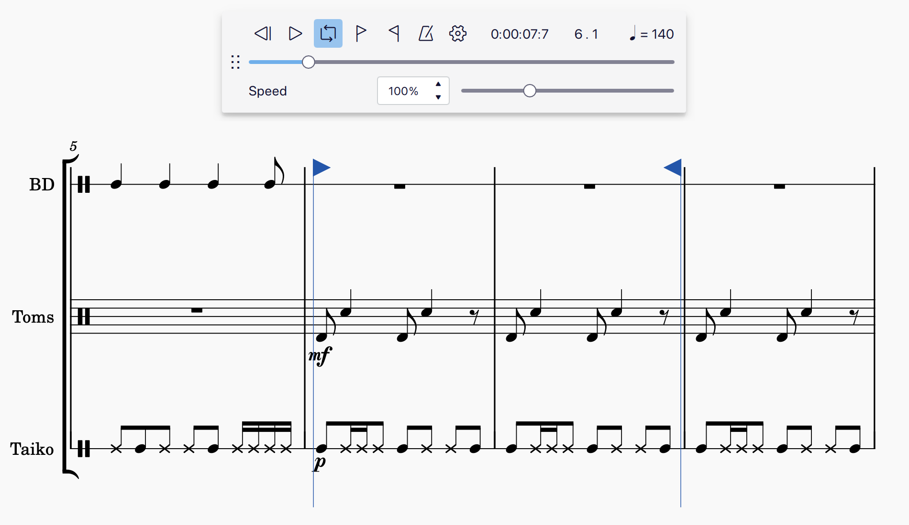

播放控件
概述

播放工具栏
基本播放功能可通过应用窗口右上角的 播放工具栏 访问。
从左到右的按钮依次为：
- 倒回：从乐谱（或循环段落）开头开始播放
- 播放：开始和停止播放
- 切换循环播放：播放选定的音乐范围
- 节拍器：打开和关闭节拍器打点
- 播放设置：提供对各种播放控件的访问
- 播放位置计数器：显示播放光标的时间、小节和拍
- 播放速度：允许你查看和控制播放速度
通过单击并拖动 倒回 按钮左侧的停靠手柄，可以取消停靠并重新定位播放面板。
播放控件
播放
要开始播放：
- 按 播放 按钮，或按 Space
- （可选） 单击某个音符或休止符以确定播放起点
要停止播放，请在播放期间按 播放 按钮（它会显示"暂停"图标），或按 Space。
如果在按 播放 之前没有进行选择，播放将从乐谱开头开始，或从上次停止的位置开始。
播放期间，根据 混音器 中静音/独奏的设置，将听到所有乐器。要在 不使用 混音器 中独奏/静音控件的情况下快速播放特定谱表或谱表范围：
MuseScore Studio 现在将只播放选中的乐器。
倒回
按 倒回 按钮可从乐谱开头开始播放。
如果设置了循环，按 倒回 将从循环开头开始播放。
循环
要在某个音乐段落上循环播放：
- 在乐谱中 选择一个范围，其中包含你想播放的音乐段落
- 单击 切换循环播放
- 按 播放
循环段落的起点和终点会出现旗帜标记。要清除循环段落标记，请再次按 切换循环播放 按钮。

已取消停靠的播放面板，第 6 和第 7 小节周围显示循环起点和终点标记。
节拍器
要在播放期间听到节拍器打点，请单击 节拍器 按钮。
当 节拍器 按钮呈彩色时，播放期间将听到节拍器打点。要关闭节拍器，请再次按 节拍器 按钮，使彩色按钮背景不再显示。
你可以在 混音器 中控制节拍器的音量及其使用的音色。
当 节拍器 开启时，节拍器打点将包含在你的 导出的音频文件 中。
播放位置计数器
当前播放位置由播放控件右侧的两个计数器显示。一个以 经过的时间 显示位置，另一个以 小节和拍 显示。
要手动跳转到某个时间戳、小节或拍：
- 单击某个计数器
- 输入一个数字
- 按 Esc 或单击计数器字段外部以清除选择
- 按 播放
播放速度
播放速度 按钮显示播放光标所在位置的相对速度。速度以四分音符拍显示，相对于乐谱中记写的任何速度。
例如，如果第 5 小节开头添加了 ♩= 80 的速度标记，那么当播放光标到达第 5 小节开头时，播放速度 按钮也会显w♩= 80。
或者，如果第 6 小节开头添加了 ♪=100 的速度标记，那么当播放光标到达第 6 小节开头时，播放速度 按钮将显示 ♩= 50。
播放速度 按钮还会考虑 速度变化 以及 换气与停顿。这意味着你会看到数字在 渐快 时增大，在 渐慢 时或播放光标到达 延长记号 时减小。
MuseScore Studio 使你可以独立于所有记写的速度标记来控制整个乐谱的 播放速度。这使你可以更快或更慢地播放乐谱，而无需添加或修改记写的速度标记。
要独立于记写的速度标记控制乐谱的播放速度：
- 单击 播放速度按钮
- 在出现的弹出窗口中，用鼠标左右移动滑块控件，或
- 在滑块控件左侧的文本字段中输入一个数字

播放速度弹出窗口可通过单击播放速度按钮打开
播放速度设置为默认速度 (♩= 120) 的百分比，或在播放期间播放光标位置处生效的任何速度标记的百分比。
更改播放速度时，MuseScore Studio 会保持所有记写的速度标记、速度变化以及换气与停顿之间的关系。这意味着所有记写的速度及其与其他标记（包括速度变化以及换气与停顿）的关系保持不变，但根据你选择的播放速度，听到的速度会更快或更慢。
要永久显示播放速度控件，请通过单击并拖动 倒回 按钮左侧的停靠手柄来取消停靠播放面板。
播放设置
单击 播放设置 按钮可控制 MuseScore Studio 中播放工作方式的各个方面。你可以根据需要勾选或取消勾选这些设置。
我们将依次查看每个设置。
启用 MIDI 输入
勾选此选项后，你将能够使用连接的 MIDI 设备（如键盘或鼓机）听到播放并输入记谱。如果你不想在 MuseScore Studio 中使用 MIDI 设备（例如，仅在另一个后台应用程序中将其用于试听），请取消勾选此选项。详情参见 使用 MIDI。
MIDI 输入音高
MIDI 输入音高 子菜单中有两个选项，允许你控制使用 MIDI 设备输入的记谱是以 记写音高 还是 实际音高 录入（针对 移调乐器）。
请注意，此设置只有在 音乐会音高 开关未勾选时才有区别。以音乐会音高输入记谱时，在 MIDI 设备上演奏的所有音符都将按其实际音高录入。
- 选择 记写音高 时，在 MIDI 设备上演奏的音符将录入到与所演奏音符相对应的谱表位置。
- 例如，在为降 B 调小号输入记谱时，在 MIDI 设备上演奏 C 将录入为 C，听起来为 B♭。
- 选择 实际音高 时，在 MIDI 设备上演奏的音符将按与所演奏音符音高相对应的实际音高录入。
- 例如，在为降 B 调小号输入记谱时，在 MIDI 设备上演奏 C 将录入为 D，听起来为 C。
播放反复
勾选此选项后，反复标记内的所有音乐段落在播放期间都会反复。如果你想在播放期间忽略反复标记，请取消勾选此选项。
播放和弦符号
勾选此选项后，所有和弦符号都会在播放期间发声。如果你想在播放期间忽略和弦符号，请取消勾选此选项。
编辑时试听
勾选此选项后，你输入、选择或修改的每个音符都会听到预览音。取消勾选此选项可在输入、选择或修改音符时不听到声音预览。
自动平移乐谱
勾选此选项后，乐谱位置将在播放和编辑期间自动调整。如果你希望乐谱位置保持静止，请取消勾选此选项。
设置循环标记
要手动设置循环段落的起点：
- 选择一个小节、音符或休止符
- 单击 播放设置
- 选择 设置左循环标记
要手动设置循环段落的终点：
- 选择一个小节、音符或休止符
- 单击 播放设置
- 选择 设置右循环标记
当播放工具栏处于取消停靠状态时，循环起点和终点标记的专用按钮也可以永久显示在 播放工具栏 中。
外部链接
节拍器打点演示乐谱文件 https://musescore.org/en/node/357722#comment-1220561